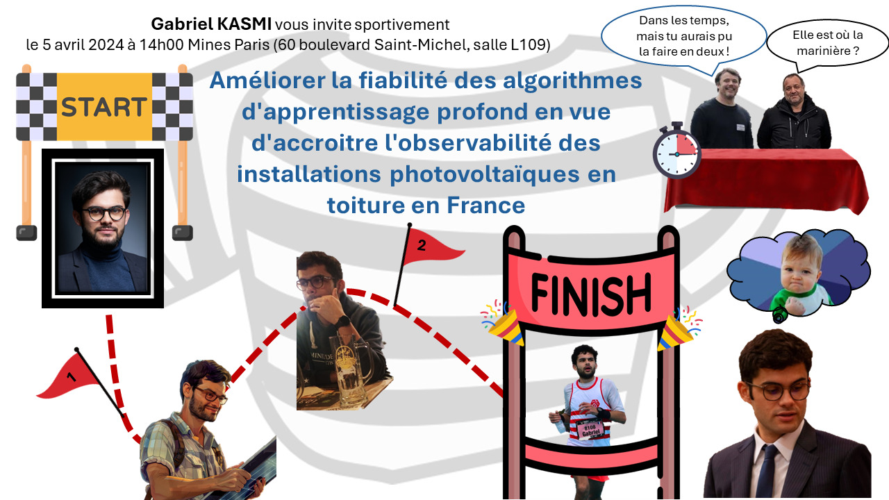

Research
Current research
Explainability and wavelet transform
Improving the observability of rooftop PV systems
List of publications
Publications in peer-reviewed journals
- Kasmi, G., Saint-Drenan, Y. M., Trebosc, D., Jolivet, R., Leloux, J., Sarr, B., & Dubus, L. (2023). A crowdsourced dataset of aerial images with annotated solar photovoltaic arrays and installation metadata. Scientific Data 10(1), 59.
Abstract: Photovoltaic (PV) energy generation plays a crucial role in the energy transition. Small-scale, rooftop PV installations are deployed at an unprecedented pace, and their safe integration into the grid requires up-to-date, high-quality information. Overhead imagery is increasingly being used to improve the knowledge of rooftop PV installations with machine learning models capable of automatically mapping these installations. However, these models cannot be reliably transferred from one region or imagery source to another without incurring a decrease in accuracy. To address this issue, known as distribution shift, and foster the development of PV array mapping pipelines, we propose a dataset containing aerial images, segmentation masks, and installation metadata (i.e., technical characteristics). We provide installation metadata for more than 28000 installations. We supply ground truth segmentation masks for 13000 installations, including 7000 with annotations for two different image providers. Finally, we provide installation metadata that matches the annotation for more than 8000 installations. Dataset applications include end-to-end PV registry construction, robust PV installations mapping, and analysis of crowdsourced datasets.
The article can be accessed here and the
Zenodo repository containing the dataset by clicking on this badge:
 .
.
Workshops (peer reviewed)
Oral presentations
Preprints
Posters
Peer review
- Solar RRL
- XAI in action workshop (NeurIPS 2023)
- Tackling Climate Change with Machine Learning workshop (ICLR 2024)
PhD thesis
Overview

My PhD thesis introduced a method for enhancing the reliability of deep learning algorithms aimed to be used in critical industrial processess. My case study was the improvement of the observability (i.e., ability of the TSO to accurately estimate) of rooftop photovoltaic (PV) power generation.
Through this PhD, I made contributions in machine learning and explainable AI, with the introduction of the wavelet scale attribution method (WCAM) and new feature attribution method. I also made contribution in power systems with the introduction of a new algorithm for mapping rooftop PV systems (DeepPVMapper) and the associated database, which is currently the world largest with this level of detail.

Abstract and manuscript
In November 2023, the French photovoltaic (PV) installed capacity stood at 18.6 GWp, and the French electricity transmission system operator (TSO) lacks power measurements for 20% of the fleet, which mostly correspond to small-scale (rooftop) systems. In the context of decarbonizing the electric mix, the PV installed capacity will continue to experience sustained growth in the coming years, and the so-called problem of poor PV observability threatens its long-term integration into the grid due to the uncertainty it creates. A better knowledge of the rooftop PV fleet, embodied in a nationwide technical registry recording the localization and characteristics of the PV installations, is necessary to improve PV observability. This thesis proposes to assess whether deep learning-based remote sensing on orthoimagery is a suitable method for constructing this technical registry. The thesis first discusses the quality standards the technical registry should satisfy and introduces an unsupervised evaluation method to monitor the accuracy of the registry in the absence of ground truth labels. Second, the thesis introduces a new feature attribution method that enables the auditing of the model's decisions by decomposing its predictions into the space-scale domain. The thesis discusses the relevance of this decomposition for assessing what the model sees on the input image, understanding the model's sensitivity to varying acquisition conditions, which are found to affect the model's accuracy and reliability, and introducing a robust and reliable algorithm for mapping rooftop PV installations. Finally, the relevance of the registry for improving rooftop PV observability is established by showing that accurate and scalable estimations of the rooftop PV power production can be derived from the registry and weather data. This thesis features contributions in power systems by showing how to effectively improve rooftop PV observability and in deep learning by improving the interpretability of deep learning models thanks to a new feature attribution method. More generally, this thesis underlines the necessary conditions for using deep learning in critical industrial contexts.
The manuscript will soon be accessible.
Miscellaneous works
- Kasmi, G., Dubus, L, Saint-Drenan, Y.-M. & Blanc, P. Looking for a frequency-based principle to predict the sensitivity of convolutional neural networks to Gaussian image perturbations.
This work in process was presented during the PhD Forum at ECML-PKDD 2022. It it a snapshot of our early attempts to use Fourier theory to explain the (lack of) robustness of a CNN classifier. This work later led to the WCAM. The manuscript is accessible here and the slides of the presentation here.